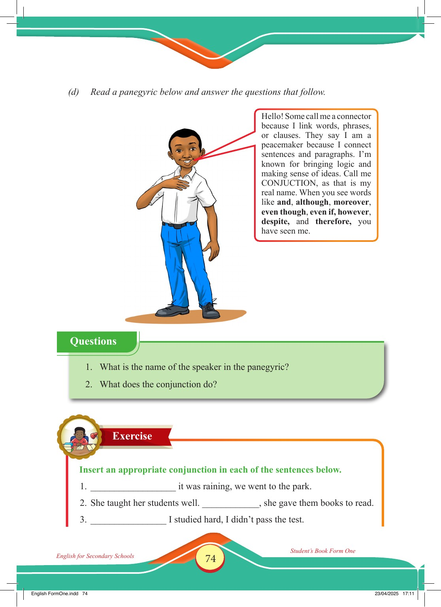

Accessible text transcript - page 74
Use the reader's read-aloud controls or select an individual segment below.
Printed book page 74. English for Secondary Schools Student’s Book Form One (d) Read a panegyric below and answer the questions that follow. Smiling schoolboy in a white shirt and blue trousers standing with one hand on his chest. Speech bubble saying that conjunction is a connector that links words, phrases, clauses, sentences, and paragraphs, with examples such as and, although, moreover, even though, even if, however, despite, and therefore. Hello! Some call me a connector because I link words, phrases, or clauses. They say I am a peacemaker because I connect sentences and paragraphs. I’m known for bringing logic and making sense of ideas. Call me CONJUCTION, as that is my real name. When you see words like and, although, moreover, even though, even if, however, despite, and therefore, you have seen me. Questions 1. What is the name of the speaker in the panegyric? 2. What does the conjunction do? Exercise Insert an appropriate conjunction in each of the sentences below. 1. it was raining, we went to the park. 2. She taught her students well. , she gave them books to read. 3. I studied hard, I didn’t pass the test. English for Secondary Schools Student’s Book Form One English FormOne.indd 74 23/04/2025 17:11 Return to the page image